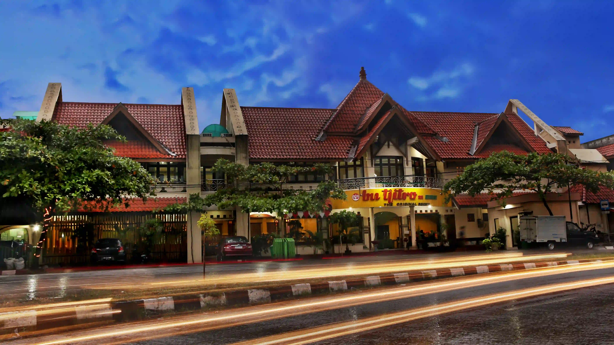
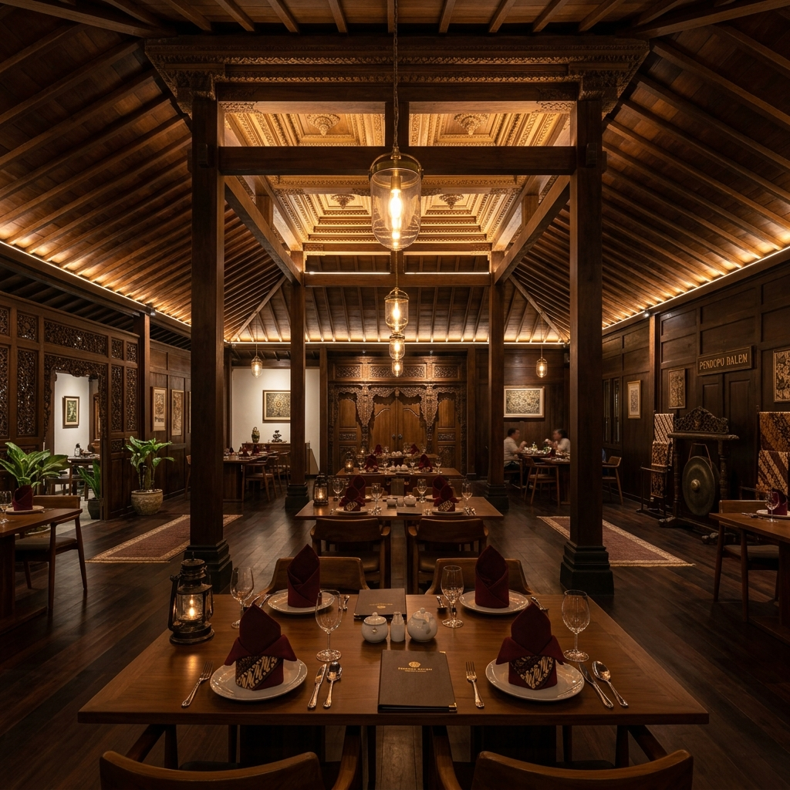
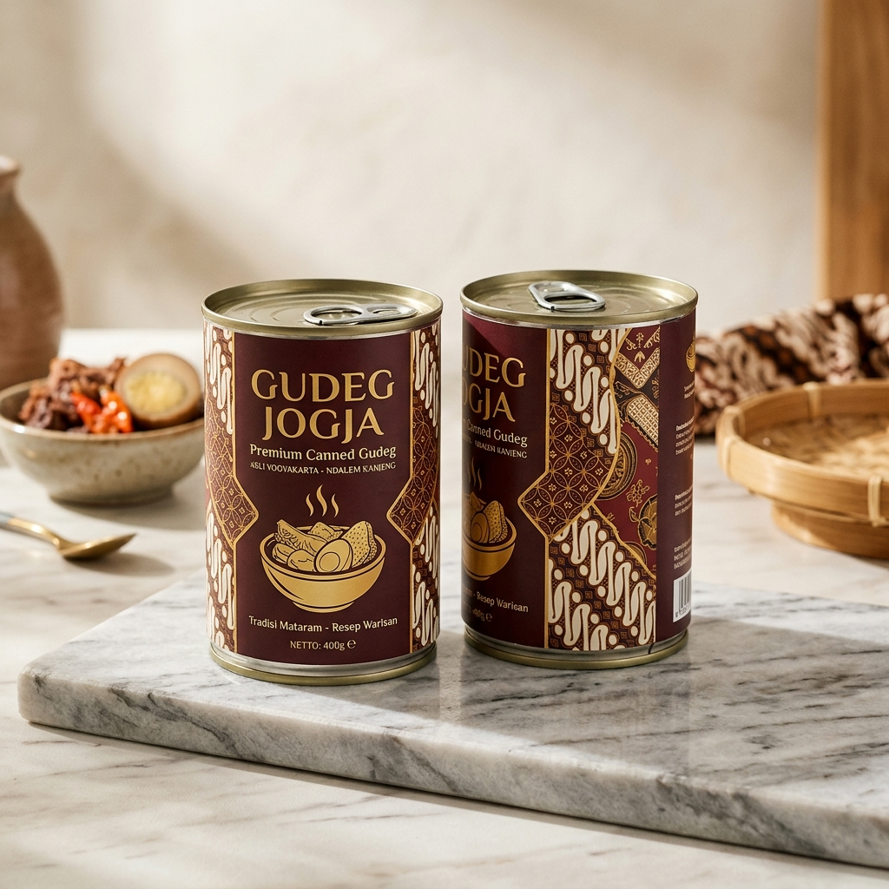
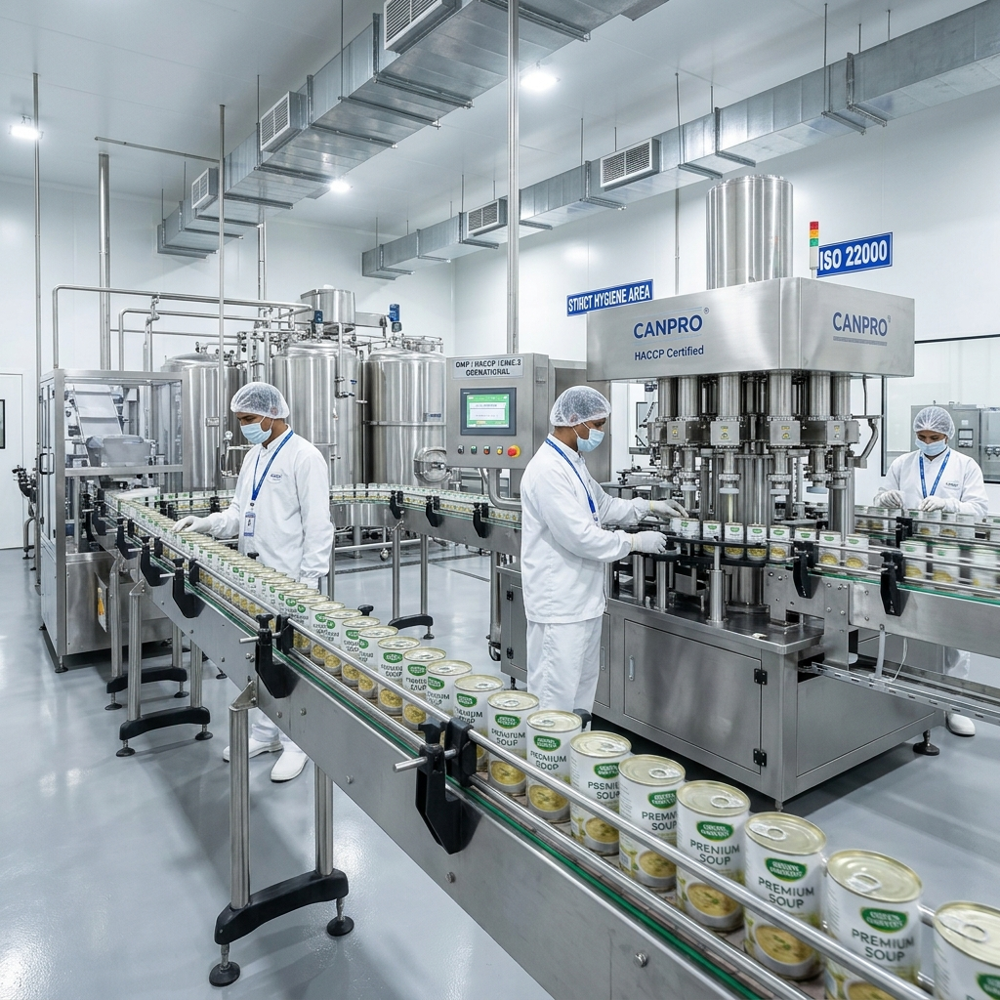

Gudeg Bu Tjitro 1925 merupakan gudeg yang melegenda dan terkenal di Yogyakarta, yang dirintis oleh Bu Tjitro Sastrodiprodjo pada tahun 1925. Makanan tradisional ini turun temurun diwariskan kepada keturunannya dengan tetap menggunakan resep warisan leluhur.

"Resep yang sama, ketulusan yang sama, dihidangkan untuk generasi baru."
Selama puluhan tahun, Gudeg Bu Tjitro 1925 berkomitmen melestarikan cita rasa asli Yogyakarta dengan bahan-bahan lokal pilihan. Dari dapur tradisional Jogja hingga kini melintasi batas samudera, dedikasi kami pada rasa tetap tak tergoyahkan.
Baca Sejarah LengkapNikmati hidangan langsung di restoran kami yang bernuansa adat Jawa Joglo yang hangat dan asri, diiringi alunan gamelan lembut yang menenangkan jiwa.
Arsitektur kayu jati kuno memberikan suasana makan malam kerajaan Jawa.
Semua menu dimasak segar setiap hari menggunakan kelapa dan nangka muda pilihan.


Inovasi mutakhir dari Gudeg Bu Tjitro 1925. Gudeg kemasan kaleng yang dimasak secara steril tinggi tanpa zat pengawet kimia.
Melalui proses sterilisasi pemanasan bertekanan tinggi (retort) sehingga awet alami.
Mengutamakan kesehatan konsumen dengan tidak mencampurkan bahan kimia pengawet.
Tersedia dalam varian Original, Pedas, Blondo, Rendang, dan Vegetarian.
Punya bisnis kuliner tradisional dan ingin mengemasnya ke dalam kaleng seperti Gudeg Bu Tjitro? Kami menyediakan jasa maklon (canning service) standar industri bersertifikasi lengkap.
Penyesuaian resep masakan Anda agar stabil setelah proses sterilisasi suhu tinggi.
Proses memasak, pengalengan, dan labeling menggunakan mesin otomatis steril standar GMP.

Kami membuka pintu kerja sama yang luas bagi pemilik toko, institusi pendidikan, maupun kelompok industri untuk berkolaborasi.
Peluang kemitraan bagi pemilik pusat oleh-oleh, minimarket, toko retail, atau reseller untuk menjual produk Gudeg Kaleng kami dengan skema bagi hasil yang menguntungkan.
Program magang industri pangan bagi pelajar SMK dan mahasiswa universitas (Teknologi Pangan, Manajemen Kuliner, Pariwisata, dan Pemasaran) untuk belajar langsung di dapur industri kami.
Paket kunjungan edukatif bagi rombongan sekolah, universitas, atau dinas untuk melihat proses produksi pengalengan modern dan mencicipi hidangan kuliner kami langsung.
Kepercayaan konsumen adalah prioritas utama kami. Produk kami diproduksi dengan pengawasan ketat dan telah lulus uji sertifikasi pangan nasional.